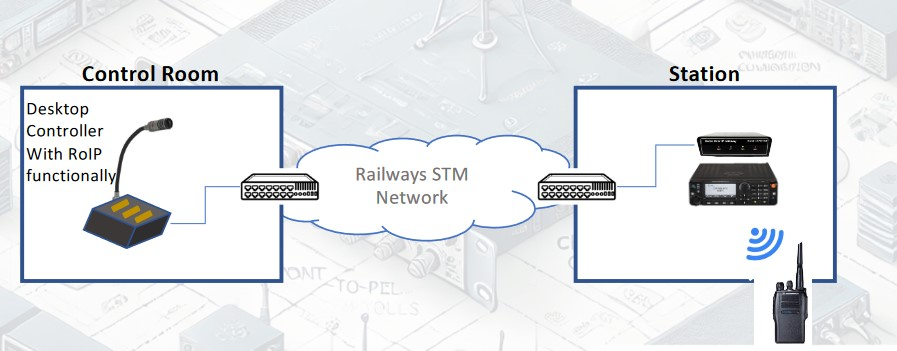

VRVHF-06 Multi-Channel Digital Voice Recorder
The VRVHF-06 Multi-Channel Digital Voice Recorder is built to capture extended audio signal
recordings,
making it ideal for surveillance and communication operations. It offers a cost-effective solution
with the
flexibility to expand as needed.
Audio signals are initially recorded in a compressed format on magnetic media, such as a Hard Disk
Drive,
and are promptly converted to a standard .WAV format for playback. The recording process can be
triggered
by receiver pick-up, functioning in both On-Hook, Off-Hook, VOX, and detection modes.
A single module allows for the simultaneous monitoring of up to 6 channels. A comprehensive database
is maintained, capturing all call-related information such as In/Out tags, Incoming/Outgoing
numbers, Call Date, Start Time, End Time, and Duration. Advanced search functionality is available
for all recorded data, with options to sort records by channel number, telephone number, date, start
time, end time, and call duration.
The system automatically begins recording as soon as a call is detected and stops recording when the
caller hangs up. Additionally, it features voice activation, enabling recording for other media such
as radio and satellite communications.
Key Features
Audio Logs of All Calls
The system automatically records calls simultaneously routed through all lines.
User-friendly Browser-based Interface
Implements an easy-to-use browser-based application accessible from any remote computer
with extensive call reviewing options. Listen to active calls and get in-depth details
about each recorded call from the secure interface with certain administrative rights.
Multi-login Facility with Administrative Rights
Multiple users can log in to the browser interface at different access levels with
administrative
rights.
Groups can be created for call monitoring, and calls can be assigned to each user-defined group.
Advanced Search with Extensive Options
The browser interface comprises advanced search features to retrieve call details based on the
given criteria. Perform an advanced search that lets you find desired details within moments.
Audio Compression to Multiple Formats
Audio files can be converted to advanced formats like GSM, MP3, PCM, and G.711 (A-law/µ-law)
to save disk space. Compressed audio files can be exported to another user via email for data
sharing.
Records Complete Call Information
Get full-fledged call information on the browser interface. Call details include date, time,
duration, and more, presented in reports that can be printed as needed.
Real-time Call Monitoring
Monitor the complete telephone network from a remote location. The same files can later be
reviewed multiple times through the accessible interface.
Audio Player for Analysis
Listen to interactions, select and analyze recorded audio files using advanced tools
available in the Audio Player. Select and save multiple audio files with ease.
Data Backup, Restore, and Export
The Digital Voice Logger allows you to back up calls to CDs, DVDs, HDDs, or USB drives
and restore the files when needed. Wave files can be compressed into multiple formats like WAV,
MP3, or OGG, and exported via email for sharing.
Multiple Product Connectivity to a Single PC
Connect different digital models to a single computer. Users can access a secure remote
interface
to monitor all recorded calls across multiple channels.
Scalable to Log Higher Densities
The Digital Voice Logger is available in configurations of 1, 2, 4, 6, 8, 12, and 16 ports.
The design is scalable to log higher numbers of ports as per requirements.
Technical Specifications
Channels
Standard Configuration: 6 Analog Channels
Expandable: Up to 16 Channels
Networking Capability
Interface: Ethernet
Storage Capacity
Internal Storage: 256 / 512 GB Hard Disk (For 6 channels)
External Storage: Compatible with Hard Disk / Pen Drive / External Optical
Drive
Simultaneous Recording: Possible on PC Hard Disk
Sampling Rate
Rate: 8000 samples per second (default). Supports up to 48000 Samples/Second.
Frequency Response
Range: 300-3400 Hz (+/- 3 dB)
Analog Input
Impedance: 600 Ω or > 20K Ω
Type: Balanced or Unbalanced
Radio Over IP Gateway (CRP6V1WP)
Radio over Internet Protocol (RoIP) converts analog audio signals from Analog and Digital
Land Mobile Radio/Repeater Systems, allowing seamless transmission over local or
wide-area networks.
RoIP supports not just voice but also crucial LMR signals like PTT and COR control,
providing secure connections between remote radio systems over static or dynamic IPs.
It automatically reconnects after power or link resets and supports multiple controller
consoles, avoiding the high costs of fixed console setups.
Especially Designed to overcome the limited reach of radio base stations (a few
kilometers), the Radio over IP Gateway links different radio networks through the IP
backbone. With IP’s extensive coverage capabilities, radio communication can be
extended as far as needed, allowing interoperability among all handsets and walkie-
talkies in the connected networks
Key Features:
- Supports voice and LMR signals like PTT and COR control.
- Auto-reconnection after power or link reset.
- Secure communication using authentication packets.
- Connectivity between static and dynamic IP networks.
- User-programmable IP configuration with fixed or dynamic IP allocation.
- Remote channel change for 6 VHF frequencies programmed for railways.
Applications:
- Facilitating communication between office sites.
- Centralized communication management across locations.
- Remote radio channel monitoring via Controller, PC, or fixed RoIP unit.
- Supporting long-range communication for railways, tunnels, highways, and shipping yards.
Point To Point : Control Room to Station
In a Single Point-to-Point Connectivity setup, two distinct radio wireless networks at
different locations can connect with each other via ROIP over the IP backbone. The ROIP
interfaces with both the Radio Base Station and the IP network. When an individual
speaks into their handset, the transmission occurs over the IP backbone using ROIP to
the other location, and the process works in reverse as well. This allows all handsets at
both locations to communicate as if they were part of the same radio wireless network.
The two ROIPs connect directly using a static IP address, over fixed Desktop Audio
Console (Controller). The schematic diagram of the Single Point-to-Point Configuration is
illustrated below. This Controller will be having equivalent feature of RoIP and advance
feature of mechanical push button functionality with internal programing for fixed
Frequencies for all a particular station with remote channel changing feature

Technical Specifications:
- Dimensions: 1.75 x 5.9 x 4.3 inches (H x W x D).
- Weight: 360g.
- Operating Temperature: -10°C to +55°C.
- Power: 9V DC, 500mA.
- Network Connection: 10/100 Base-T Ethernet (RJ-45).
- Audio Signals: PTT, Carrier, Receive Audio, Transmit Audio.